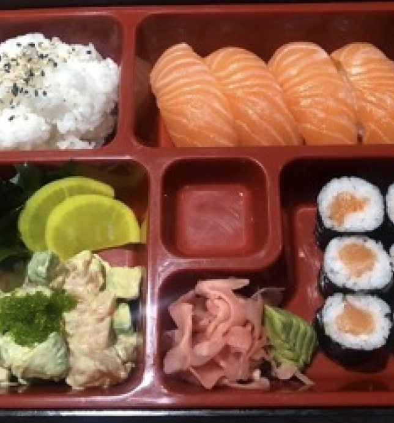

Откройте для себя вкус настоящих суши
Наши суши - это сочетание свежих ингредиентов, традиционных рецептов и мастерства наших поваров.
Заказать сейчасНаши фирменные блюда

Суши с лососем
Нежные кусочки свежего лосося на рисовой основе.

Ролл с крабом
Роскошный ролл с мясом краба и свежими овощами.

Темпура ролл
Хрустящий ролл с морепродуктами во фритюре.
О нашем ресторане
Наш ресторан специализируется на приготовлении высококачественных суши из свежих ингредиентов. Мы гордимся тем, что используем только самые лучшие продукты и следуем традиционным японским рецептам. Наша команда опытных поваров с радостью поделится с вами своим мастерством.